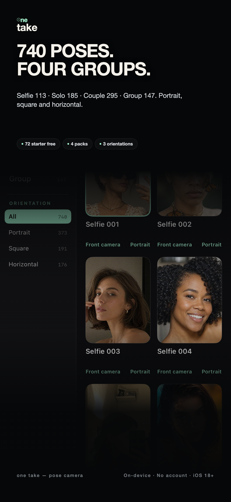
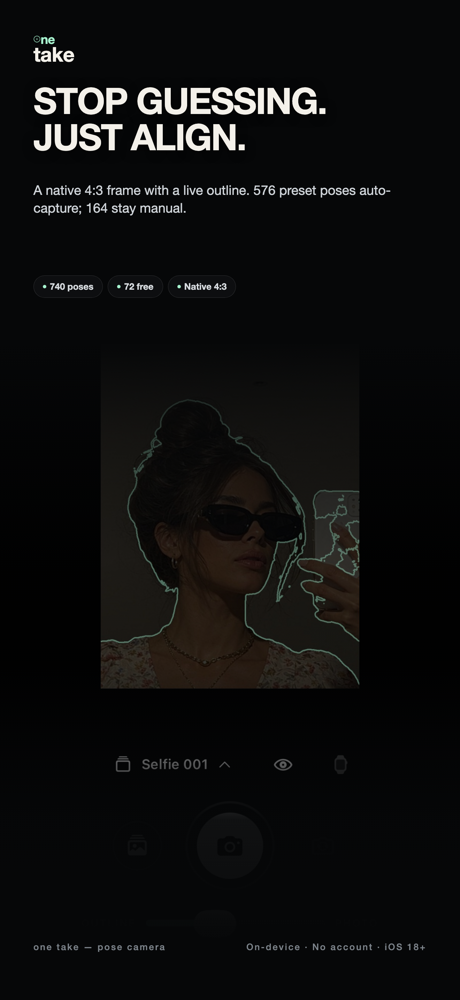

Stop guessing.
Just align.
One Take is a pose camera for people who don’t know how to pose. Pick a reference, see a live translucent outline over your camera, align your body — the shutter fires automatically.
User Guide Support
How it works
1 · Pick a pose
740 pose references across Selfie, Solo, Couple and Group — portrait, square and horizontal. 72 starter poses are free.
2 · See the outline
A translucent guide shows the pose. Move, rotate or scale it with the four corner handles before you shoot.
3 · Let it shoot
When your body matches a preset-backed pose for about 0.8 seconds, One Take captures automatically. Or tap the shutter.
Built for real photos
Lens guidance
The camera opens on its native 4:3 frame at 1×. Zoom stays available; 1:1 poses preview in 1:1.
Outline ↔ photo
Slide from pure line art to a faint reference photo when you need to see face direction and expression.
On-device
Pose tracking happens on your iPhone with Apple Vision. No account, no upload, no ads, no tracking.
See the difference

One Take shows a live guide over the camera. Every capture saves a native full frame and an overlay crop; both stay in your Gallery and iOS Photos.